מהו חיידק הליגיונלה ולמה הוא מסוכן?
כל מה שצריך לדעת על החיידק, דרכי ההדבקה, אוכלוסיות בסיכון והתקן הישראלי לבדיקה.
קראו עודדיגום, בדיקה, איתור סיכונים והגנה על בריאות הציבור
קיסר דיגום - פתרונות מתקדמים לבקרת איכות המים, האוויר והסביבה, לעסקים, מוסדות וארגונים.
כלל הבדיקות מתבצעות תחת הרשות הלאומית להסמכת מעבדות ובקרת משרד הבריאות · בדיקות במעבדות מוסמכות ISO 17025
פתרון מקיף לדיגום, בדיקות מעבדה, ניטור וחיטוי - לכל סוגי המים, המזון והסביבה.
בדיקות מי שתייה, בריכות, מקוואות ומערכות מים - ברמה א'+ב'.
לפרטיםאיתור חיידק הליגיונלה ובדיקת PCR מהירה - תוצאה תוך 24 שעות.
לפרטיםבדיקות מעבדה למזון: סלמונלה, ליסטריה ופתוגנים - כולל בדיקה דחופה.
לפרטיםדיגום ובדיקות שפכים למפעלים, רשויות ותאגידי מים.
לפרטיםניטור מיקרוביאלי באוויר למפעלי מזון וסביבות ייצור סטריליות.
לפרטיםניקוי וחיטוי מאגרים בבניינים מעל 4 קומות + דיגום אימות.
לפרטיםחיטוי וניקוי צנרת + אישור חיטוי לקבלת טופס 4.
לפרטיםאספקה, התקנה ובדיקה שנתית של מתקני מז"ח.
לפרטיםסמכות מקצועית שעובדת מול הגופים המחמירים ביותר בישראל - מבתי חולים ועד רשויות.
שנים של ניסיון מול מוסדות, מפעלים וגופים ממשלתיים.
שירות בכל הארץ, ממטולה ועד אילת.
בדיקות תחת תקן ISO 17025 ובקרת משרד הבריאות.
תוצאות מהירות, כולל ליגיונלה ומזון תוך 24 שעות.
מענה מהיר ותיאום דיגום בלוחות זמנים קצרים.
ייעוץ תברואתי ובניית תוכניות דיגום מותאמות.
מבתי חולים ורשויות מקומיות ועד צה"ל, מוסדות חינוך ומפעלי מזון - גופים שלא מתפשרים על איכות המים בוטחים בקיסר דיגום.
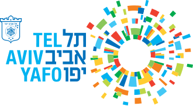
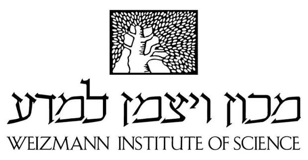
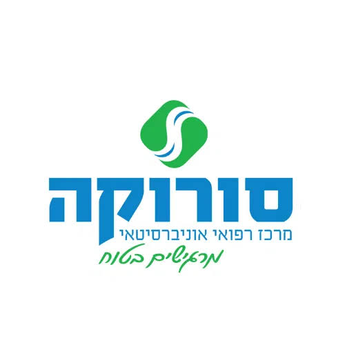
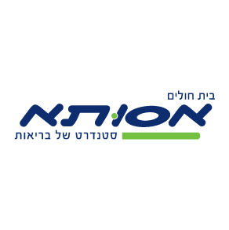
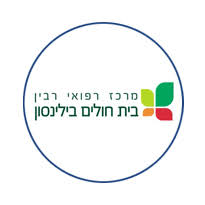
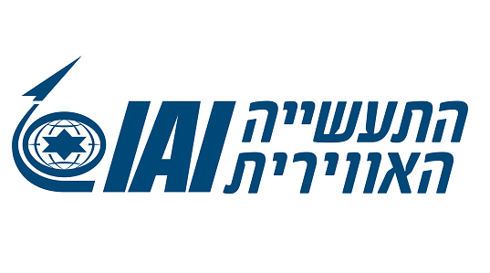

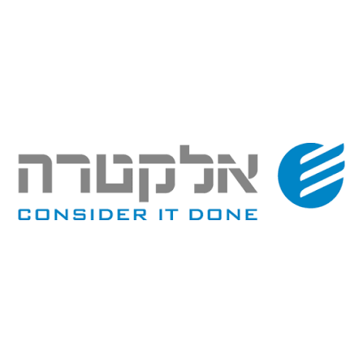
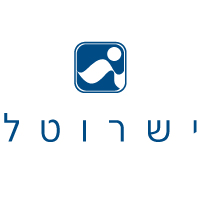
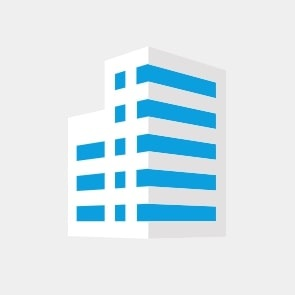
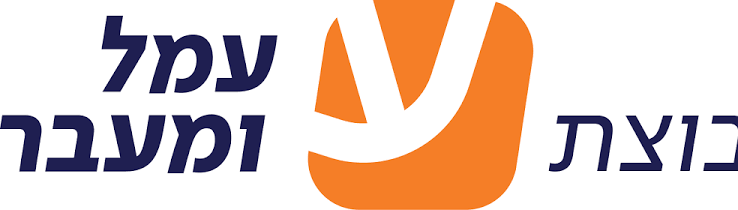
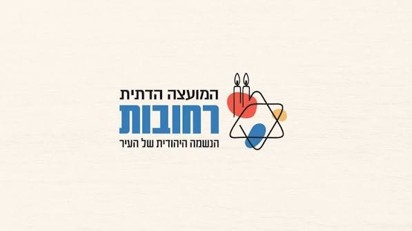
בדיקת ליגיונלה PCR / BCR עם תוצאה תוך 24 שעות ואף פחות - קריטי למרפאות שיניים, בתי מלון ומוסדות רפואיים.
אנחנו מכירים את הרגולציה והצרכים הייחודיים של כל סקטור.
מדריכים, תקנות ושאלות נפוצות בעולם הדיגום והבדיקות.

כל מה שצריך לדעת על החיידק, דרכי ההדבקה, אוכלוסיות בסיכון והתקן הישראלי לבדיקה.
קראו עוד
מה ההבדל בין הבדיקות, מתי כל אחת נדרשת וכל כמה זמן חובה לבצע אותן.
קראו עוד
מה נדרש מקבלן לפני אכלוס, איך מתנהל תהליך החיטוי ואילו מסמכים מקבלים.
קראו עודהשאירו פרטים ונחזור אליכם בהקדם, או חייגו עכשיו לקבלת ייעוץ מקצועי.